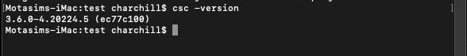
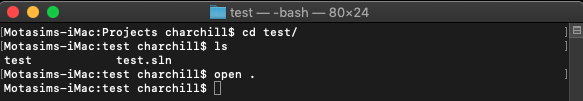
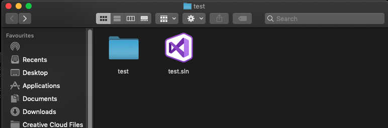
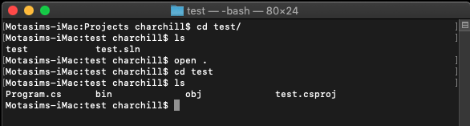
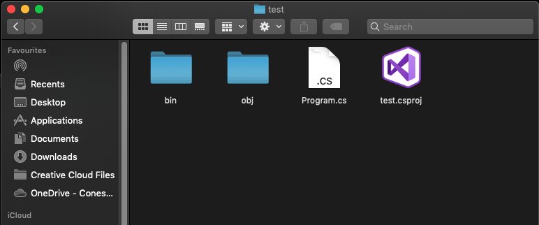
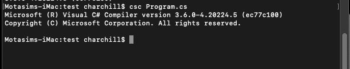
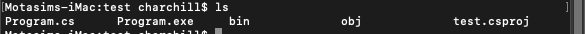
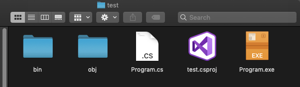

Generate EXE file using terminal on OSX/MAC
Instructions :
- 1- Open terminal and type csc -version to verify that if you have csc on your local machine. If, everything is ok, you will get the following text in terminal
-

If it says command not found please install visual studio for mac : Download visual studio!
- 2- Open the project folder via terminal. Lets assume your project name is test. Type in cd test & and type open . to open in finder
-

To create a visual studio console app project using c# visit : Create console app!
- 3- In finder you will see 1 folder named as same as your project name, and also a .sln file named as same as your project name, in this case, test
- 
- 4- In terminal, again change your directory using cd test, and hit enter. Type in ls in terminal to browser your project directory using terminal
- 
- 5- Here you will find a file named Program.cs. This is what we need to generate a .EXE file
- 
- 6- In terminal type in csc Program.cs If, everything goes ok you will see the following message in terminal
- 
- 7- Type in ls to see the EXE file using terminal
- 
- 8- OR type open . in terminal to see the EXE file using finder
- 
×